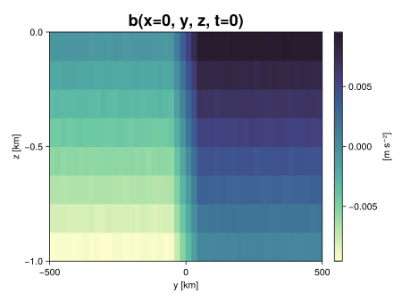
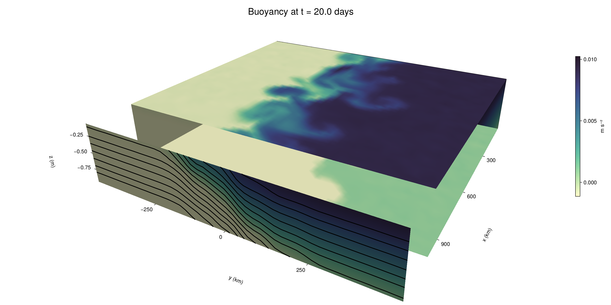

Baroclinic adjustment
In this example, we simulate the evolution and equilibration of a baroclinically unstable front.
Install dependencies
First let's make sure we have all required packages installed.
using Pkg
pkg"add Oceananigans, CairoMakie"using Oceananigans
using Oceananigans.UnitsGrid
We use a three-dimensional channel that is periodic in the x direction:
Lx = 1000kilometers # east-west extent [m]
Ly = 1000kilometers # north-south extent [m]
Lz = 1kilometers # depth [m]
grid = RectilinearGrid(size = (48, 48, 8),
x = (0, Lx),
y = (-Ly/2, Ly/2),
z = (-Lz, 0),
topology = (Periodic, Bounded, Bounded))48×48×8 RectilinearGrid{Float64, Periodic, Bounded, Bounded} on CPU with 3×3×3 halo
├── Periodic x ∈ [0.0, 1.0e6) regularly spaced with Δx=20833.3
├── Bounded y ∈ [-500000.0, 500000.0] regularly spaced with Δy=20833.3
└── Bounded z ∈ [-1000.0, 0.0] regularly spaced with Δz=125.0Model
We built a HydrostaticFreeSurfaceModel with an ImplicitFreeSurface solver. Regarding Coriolis, we use a beta-plane centered at 45° South.
model = HydrostaticFreeSurfaceModel(; grid,
coriolis = BetaPlane(latitude = -45),
buoyancy = BuoyancyTracer(),
tracers = :b,
momentum_advection = WENO(),
tracer_advection = WENO())HydrostaticFreeSurfaceModel{CPU, RectilinearGrid}(time = 0 seconds, iteration = 0)
├── grid: 48×48×8 RectilinearGrid{Float64, Periodic, Bounded, Bounded} on CPU with 3×3×3 halo
├── timestepper: QuasiAdamsBashforth2TimeStepper
├── tracers: b
├── closure: Nothing
├── buoyancy: BuoyancyTracer with ĝ = NegativeZDirection()
├── free surface: ImplicitFreeSurface with gravitational acceleration 9.80665 m s⁻²
│ └── solver: FFTImplicitFreeSurfaceSolver
└── coriolis: BetaPlane{Float64}We start our simulation from rest with a baroclinically unstable buoyancy distribution. We use ramp(y, Δy), defined below, to specify a front with width Δy and horizontal buoyancy gradient M². We impose the front on top of a vertical buoyancy gradient N² and a bit of noise.
"""
ramp(y, Δy)
Linear ramp from 0 to 1 between -Δy/2 and +Δy/2.
For example:
```
y < -Δy/2 => ramp = 0
-Δy/2 < y < -Δy/2 => ramp = y / Δy
y > Δy/2 => ramp = 1
```
"""
ramp(y, Δy) = min(max(0, y/Δy + 1/2), 1)
N² = 1e-5 # [s⁻²] buoyancy frequency / stratification
M² = 1e-7 # [s⁻²] horizontal buoyancy gradient
Δy = 100kilometers # width of the region of the front
Δb = Δy * M² # buoyancy jump associated with the front
ϵb = 1e-2 * Δb # noise amplitude
bᵢ(x, y, z) = N² * z + Δb * ramp(y, Δy) + ϵb * randn()
set!(model, b=bᵢ)Let's visualize the initial buoyancy distribution.
using CairoMakie
# Build coordinates with units of kilometers
x, y, z = 1e-3 .* nodes(grid, (Center(), Center(), Center()))
b = model.tracers.b
fig, ax, hm = heatmap(y, z, interior(b)[1, :, :],
colormap=:deep,
axis = (xlabel = "y [km]",
ylabel = "z [km]",
title = "b(x=0, y, z, t=0)",
titlesize = 24))
Colorbar(fig[1, 2], hm, label = "[m s⁻²]")
fig
Simulation
Now let's build a Simulation.
simulation = Simulation(model, Δt=20minutes, stop_time=20days)Simulation of HydrostaticFreeSurfaceModel{CPU, RectilinearGrid}(time = 0 seconds, iteration = 0)
├── Next time step: 20 minutes
├── Elapsed wall time: 0 seconds
├── Wall time per iteration: NaN days
├── Stop time: 20 days
├── Stop iteration : Inf
├── Wall time limit: Inf
├── Callbacks: OrderedDict with 4 entries:
│ ├── stop_time_exceeded => Callback of stop_time_exceeded on IterationInterval(1)
│ ├── stop_iteration_exceeded => Callback of stop_iteration_exceeded on IterationInterval(1)
│ ├── wall_time_limit_exceeded => Callback of wall_time_limit_exceeded on IterationInterval(1)
│ └── nan_checker => Callback of NaNChecker for u on IterationInterval(100)
├── Output writers: OrderedDict with no entries
└── Diagnostics: OrderedDict with no entriesWe add a TimeStepWizard callback to adapt the simulation's time-step,
conjure_time_step_wizard!(simulation, IterationInterval(20), cfl=0.2, max_Δt=20minutes)Also, we add a callback to print a message about how the simulation is going,
using Printf
wall_clock = Ref(time_ns())
function print_progress(sim)
u, v, w = model.velocities
progress = 100 * (time(sim) / sim.stop_time)
elapsed = (time_ns() - wall_clock[]) / 1e9
@printf("[%05.2f%%] i: %d, t: %s, wall time: %s, max(u): (%6.3e, %6.3e, %6.3e) m/s, next Δt: %s\n",
progress, iteration(sim), prettytime(sim), prettytime(elapsed),
maximum(abs, u), maximum(abs, v), maximum(abs, w), prettytime(sim.Δt))
wall_clock[] = time_ns()
return nothing
end
add_callback!(simulation, print_progress, IterationInterval(100))Diagnostics/Output
Here, we save the buoyancy, $b$, at the edges of our domain as well as the zonal ($x$) average of buoyancy.
u, v, w = model.velocities
ζ = ∂x(v) - ∂y(u)
B = Average(b, dims=1)
U = Average(u, dims=1)
V = Average(v, dims=1)
filename = "baroclinic_adjustment"
save_fields_interval = 0.5day
slicers = (east = (grid.Nx, :, :),
north = (:, grid.Ny, :),
bottom = (:, :, 1),
top = (:, :, grid.Nz))
for side in keys(slicers)
indices = slicers[side]
simulation.output_writers[side] = JLD2OutputWriter(model, (; b, ζ);
filename = filename * "_$(side)_slice",
schedule = TimeInterval(save_fields_interval),
overwrite_existing = true,
indices)
end
simulation.output_writers[:zonal] = JLD2OutputWriter(model, (; b=B, u=U, v=V);
filename = filename * "_zonal_average",
schedule = TimeInterval(save_fields_interval),
overwrite_existing = true)JLD2OutputWriter scheduled on TimeInterval(12 hours):
├── filepath: ./baroclinic_adjustment_zonal_average.jld2
├── 3 outputs: (b, u, v)
├── array type: Array{Float64}
├── including: [:grid, :coriolis, :buoyancy, :closure]
└── max filesize: Inf YiBNow we're ready to run.
@info "Running the simulation..."
run!(simulation)
@info "Simulation completed in " * prettytime(simulation.run_wall_time)[ Info: Running the simulation...
[ Info: Initializing simulation...
[00.00%] i: 0, t: 0 seconds, wall time: 38.522 seconds, max(u): (0.000e+00, 0.000e+00, 0.000e+00) m/s, next Δt: 20 minutes
[ Info: ... simulation initialization complete (23.205 seconds)
[ Info: Executing initial time step...
[ Info: ... initial time step complete (16.282 seconds).
[06.94%] i: 100, t: 1.389 days, wall time: 37.338 seconds, max(u): (1.219e-01, 1.230e-01, 1.529e-03) m/s, next Δt: 20 minutes
[13.89%] i: 200, t: 2.778 days, wall time: 4.217 seconds, max(u): (2.169e-01, 2.023e-01, 1.850e-03) m/s, next Δt: 20 minutes
[20.83%] i: 300, t: 4.167 days, wall time: 4.460 seconds, max(u): (2.951e-01, 2.804e-01, 1.852e-03) m/s, next Δt: 20 minutes
[27.78%] i: 400, t: 5.556 days, wall time: 4.946 seconds, max(u): (3.698e-01, 3.734e-01, 2.208e-03) m/s, next Δt: 20 minutes
[34.72%] i: 500, t: 6.944 days, wall time: 5.427 seconds, max(u): (4.764e-01, 5.228e-01, 2.182e-03) m/s, next Δt: 20 minutes
[41.67%] i: 600, t: 8.333 days, wall time: 5.782 seconds, max(u): (6.019e-01, 7.193e-01, 2.570e-03) m/s, next Δt: 20 minutes
[48.61%] i: 700, t: 9.722 days, wall time: 5.601 seconds, max(u): (7.843e-01, 1.022e+00, 3.597e-03) m/s, next Δt: 20 minutes
[55.56%] i: 800, t: 11.111 days, wall time: 5.858 seconds, max(u): (9.783e-01, 1.220e+00, 5.157e-03) m/s, next Δt: 20 minutes
[62.50%] i: 900, t: 12.500 days, wall time: 4.812 seconds, max(u): (1.351e+00, 1.054e+00, 4.456e-03) m/s, next Δt: 20 minutes
[69.44%] i: 1000, t: 13.889 days, wall time: 4.242 seconds, max(u): (1.269e+00, 1.073e+00, 4.746e-03) m/s, next Δt: 20 minutes
[76.39%] i: 1100, t: 15.278 days, wall time: 4.294 seconds, max(u): (1.268e+00, 9.857e-01, 4.459e-03) m/s, next Δt: 20 minutes
[83.33%] i: 1200, t: 16.667 days, wall time: 4.220 seconds, max(u): (1.346e+00, 1.139e+00, 3.030e-03) m/s, next Δt: 20 minutes
[90.28%] i: 1300, t: 18.056 days, wall time: 4.212 seconds, max(u): (1.477e+00, 1.165e+00, 3.279e-03) m/s, next Δt: 20 minutes
[97.22%] i: 1400, t: 19.444 days, wall time: 4.165 seconds, max(u): (1.294e+00, 1.185e+00, 3.314e-03) m/s, next Δt: 20 minutes
[ Info: Simulation is stopping after running for 1.827 minutes.
[ Info: Simulation time 20 days equals or exceeds stop time 20 days.
[ Info: Simulation completed in 1.828 minutes
Visualization
All that's left is to make a pretty movie. Actually, we make two visualizations here. First, we illustrate how to make a 3D visualization with Makie's Axis3 and Makie.surface. Then we make a movie in 2D. We use CairoMakie in this example, but note that using GLMakie is more convenient on a system with OpenGL, as figures will be displayed on the screen.
using CairoMakieThree-dimensional visualization
We load the saved buoyancy output on the top, bottom, north, and east surface as FieldTimeSerieses.
filename = "baroclinic_adjustment"
sides = keys(slicers)
slice_filenames = NamedTuple(side => filename * "_$(side)_slice.jld2" for side in sides)
b_timeserieses = (east = FieldTimeSeries(slice_filenames.east, "b"),
north = FieldTimeSeries(slice_filenames.north, "b"),
bottom = FieldTimeSeries(slice_filenames.bottom, "b"),
top = FieldTimeSeries(slice_filenames.top, "b"))
B_timeseries = FieldTimeSeries(filename * "_zonal_average.jld2", "b")
times = B_timeseries.times
grid = B_timeseries.grid48×48×8 RectilinearGrid{Float64, Periodic, Bounded, Bounded} on CPU with 3×3×3 halo
├── Periodic x ∈ [0.0, 1.0e6) regularly spaced with Δx=20833.3
├── Bounded y ∈ [-500000.0, 500000.0] regularly spaced with Δy=20833.3
└── Bounded z ∈ [-1000.0, 0.0] regularly spaced with Δz=125.0We build the coordinates. We rescale horizontal coordinates to kilometers.
xb, yb, zb = nodes(b_timeserieses.east)
xb = xb ./ 1e3 # convert m -> km
yb = yb ./ 1e3 # convert m -> km
Nx, Ny, Nz = size(grid)
x_xz = repeat(x, 1, Nz)
y_xz_north = y[end] * ones(Nx, Nz)
z_xz = repeat(reshape(z, 1, Nz), Nx, 1)
x_yz_east = x[end] * ones(Ny, Nz)
y_yz = repeat(y, 1, Nz)
z_yz = repeat(reshape(z, 1, Nz), grid.Ny, 1)
x_xy = x
y_xy = y
z_xy_top = z[end] * ones(grid.Nx, grid.Ny)
z_xy_bottom = z[1] * ones(grid.Nx, grid.Ny)Then we create a 3D axis. We use zonal_slice_displacement to control where the plot of the instantaneous zonal average flow is located.
fig = Figure(size = (1600, 800))
zonal_slice_displacement = 1.2
ax = Axis3(fig[2, 1],
aspect=(1, 1, 1/5),
xlabel = "x (km)",
ylabel = "y (km)",
zlabel = "z (m)",
xlabeloffset = 100,
ylabeloffset = 100,
zlabeloffset = 100,
limits = ((x[1], zonal_slice_displacement * x[end]), (y[1], y[end]), (z[1], z[end])),
elevation = 0.45,
azimuth = 6.8,
xspinesvisible = false,
zgridvisible = false,
protrusions = 40,
perspectiveness = 0.7)Axis3()We use data from the final savepoint for the 3D plot. Note that this plot can easily be animated by using Makie's Observable. To dive into Observables, check out Makie.jl's Documentation.
n = length(times)41Now let's make a 3D plot of the buoyancy and in front of it we'll use the zonally-averaged output to plot the instantaneous zonal-average of the buoyancy.
b_slices = (east = interior(b_timeserieses.east[n], 1, :, :),
north = interior(b_timeserieses.north[n], :, 1, :),
bottom = interior(b_timeserieses.bottom[n], :, :, 1),
top = interior(b_timeserieses.top[n], :, :, 1))
# Zonally-averaged buoyancy
B = interior(B_timeseries[n], 1, :, :)
clims = 1.1 .* extrema(b_timeserieses.top[n][:])
kwargs = (colorrange=clims, colormap=:deep)
surface!(ax, x_yz_east, y_yz, z_yz; color = b_slices.east, kwargs...)
surface!(ax, x_xz, y_xz_north, z_xz; color = b_slices.north, kwargs...)
surface!(ax, x_xy, y_xy, z_xy_bottom ; color = b_slices.bottom, kwargs...)
surface!(ax, x_xy, y_xy, z_xy_top; color = b_slices.top, kwargs...)
sf = surface!(ax, zonal_slice_displacement .* x_yz_east, y_yz, z_yz; color = B, kwargs...)
contour!(ax, y, z, B; transformation = (:yz, zonal_slice_displacement * x[end]),
levels = 15, linewidth = 2, color = :black)
Colorbar(fig[2, 2], sf, label = "m s⁻²", height = Relative(0.4), tellheight=false)
title = "Buoyancy at t = " * string(round(times[n] / day, digits=1)) * " days"
fig[1, 1:2] = Label(fig, title; fontsize = 24, tellwidth = false, padding = (0, 0, -120, 0))
rowgap!(fig.layout, 1, Relative(-0.2))
colgap!(fig.layout, 1, Relative(-0.1))
save("baroclinic_adjustment_3d.png", fig)
Two-dimensional movie
We make a 2D movie that shows buoyancy $b$ and vertical vorticity $ζ$ at the surface, as well as the zonally-averaged zonal and meridional velocities $U$ and $V$ in the $(y, z)$ plane. First we load the FieldTimeSeries and extract the additional coordinates we'll need for plotting
ζ_timeseries = FieldTimeSeries(slice_filenames.top, "ζ")
U_timeseries = FieldTimeSeries(filename * "_zonal_average.jld2", "u")
B_timeseries = FieldTimeSeries(filename * "_zonal_average.jld2", "b")
V_timeseries = FieldTimeSeries(filename * "_zonal_average.jld2", "v")
xζ, yζ, zζ = nodes(ζ_timeseries)
yv = ynodes(V_timeseries)
xζ = xζ ./ 1e3 # convert m -> km
yζ = yζ ./ 1e3 # convert m -> km
yv = yv ./ 1e3 # convert m -> km49-element Vector{Float64}:
-500.0
-479.1666666666667
-458.3333333333333
-437.5
-416.6666666666667
-395.8333333333333
-375.0
-354.1666666666667
-333.3333333333333
-312.5
-291.6666666666667
-270.8333333333333
-250.0
-229.16666666666666
-208.33333333333334
-187.5
-166.66666666666666
-145.83333333333334
-125.0
-104.16666666666667
-83.33333333333333
-62.5
-41.666666666666664
-20.833333333333332
0.0
20.833333333333332
41.666666666666664
62.5
83.33333333333333
104.16666666666667
125.0
145.83333333333334
166.66666666666666
187.5
208.33333333333334
229.16666666666666
250.0
270.8333333333333
291.6666666666667
312.5
333.3333333333333
354.1666666666667
375.0
395.8333333333333
416.6666666666667
437.5
458.3333333333333
479.1666666666667
500.0Next, we set up a plot with 4 panels. The top panels are large and square, while the bottom panels get a reduced aspect ratio through rowsize!.
set_theme!(Theme(fontsize=24))
fig = Figure(size=(1800, 1000))
axb = Axis(fig[1, 2], xlabel="x (km)", ylabel="y (km)", aspect=1)
axζ = Axis(fig[1, 3], xlabel="x (km)", ylabel="y (km)", aspect=1, yaxisposition=:right)
axu = Axis(fig[2, 2], xlabel="y (km)", ylabel="z (m)")
axv = Axis(fig[2, 3], xlabel="y (km)", ylabel="z (m)", yaxisposition=:right)
rowsize!(fig.layout, 2, Relative(0.3))To prepare a plot for animation, we index the timeseries with an Observable,
n = Observable(1)
b_top = @lift interior(b_timeserieses.top[$n], :, :, 1)
ζ_top = @lift interior(ζ_timeseries[$n], :, :, 1)
U = @lift interior(U_timeseries[$n], 1, :, :)
V = @lift interior(V_timeseries[$n], 1, :, :)
B = @lift interior(B_timeseries[$n], 1, :, :)Observable([-0.009389582990825722 -0.008081909023102657 -0.006851887018239949 -0.005634906185755617 -0.004397388591524619 -0.0031109592494381485 -0.0018870717514468786 -0.0006346247604549735; -0.009396174951346231 -0.008139415790399767 -0.006888195559060314 -0.0056316779081889284 -0.004366403879845761 -0.003109949853669528 -0.001845606429679374 -0.0006395011067216835; -0.009365379293808297 -0.008122027721063647 -0.006874183284157893 -0.005620050923838175 -0.004382996663287417 -0.0031226887486077632 -0.0018537769420239995 -0.0006227901126714661; -0.009392762507370263 -0.00812563925167735 -0.006884688503606645 -0.005612942279979165 -0.004369822793164557 -0.0031192812574430528 -0.001875196885009904 -0.0006144986321679353; -0.009393839833652171 -0.008121637827985567 -0.006841677997666632 -0.005612744365397282 -0.004358211156618711 -0.003122425886456215 -0.0018847303396725002 -0.000628600099314522; -0.009374124267100666 -0.008108879348910527 -0.006876929361952673 -0.0056194966957304445 -0.004377333691733164 -0.003123491837594627 -0.0018676526685497078 -0.0006274233335547769; -0.009369151259204997 -0.008150841812508811 -0.006873525264508508 -0.005623745440914508 -0.004349679512497343 -0.003115588010550952 -0.0018735280937172561 -0.0006224448928372287; -0.009377245807168966 -0.008115838892609232 -0.006881408896360036 -0.005613011825494253 -0.004351612832202705 -0.0031219606936164026 -0.0018784552157637014 -0.0006225407350686292; -0.00936915900858846 -0.008144444951986789 -0.006867639757652251 -0.005615799999755758 -0.004398446386804857 -0.003144638113099787 -0.0018830889026829143 -0.0006089618918313878; -0.009392786294719626 -0.00812339777491721 -0.006873410497606998 -0.005597792383814272 -0.004379004838876962 -0.003132379955590857 -0.0018792571288302415 -0.0006489699133855465; -0.00935401424987436 -0.008153989680853206 -0.006851832046636047 -0.005612162858402554 -0.0043780729963626055 -0.00311645479169177 -0.0018820433382745756 -0.0006138152019040563; -0.009365437936460504 -0.008124553443576718 -0.006870335228607381 -0.0056006858951792955 -0.004388252567827988 -0.0031417565976576464 -0.0018807546764327391 -0.0006040813331126095; -0.009375113002022857 -0.00812672612309226 -0.006882252077734254 -0.005629692402997377 -0.004367178861726694 -0.003109827920841556 -0.0018688415665051039 -0.0006261861772332054; -0.009366226503401522 -0.008133670028403666 -0.006891303299875573 -0.005603236225764666 -0.0043593672921114985 -0.0031247783703536856 -0.0018595660233326884 -0.0006394711323382887; -0.009380272871437346 -0.00813242963426407 -0.006864995183355376 -0.00562660090869443 -0.0043766232622232115 -0.003119309315815533 -0.001895992853802899 -0.0006159677606747605; -0.009366460962692395 -0.008134985412799051 -0.006880529260836908 -0.005628265923979687 -0.004382216839121745 -0.003102465612020804 -0.0018489026390878162 -0.0006261056031324378; -0.009343570015910548 -0.008136372200257078 -0.00689177542283122 -0.005661731072921274 -0.004381561138784921 -0.0031203952428249027 -0.0018747550778223851 -0.0006194398764129573; -0.009372912914257394 -0.008106032272947542 -0.006865739565350208 -0.005638557167507344 -0.004368023717564731 -0.003154717336885941 -0.0018838514706494404 -0.0006027571332983796; -0.009362463306054348 -0.008138446455351224 -0.006886157751272556 -0.00562013200079171 -0.004354602675773404 -0.00313086436383085 -0.0018709490051160415 -0.0006296516344474757; -0.009369745793848252 -0.00812961180103348 -0.0068526364297619045 -0.005624714891039647 -0.004357421362562754 -0.0031245728679047216 -0.0018733234513375774 -0.0006183826923620278; -0.00937693928862646 -0.008129382998038606 -0.006864445278302139 -0.0056331959940114215 -0.004372457412202663 -0.00313596256587617 -0.0018690777199609843 -0.0006191440042233151; -0.009350196271593272 -0.008112710283833756 -0.006885157463093802 -0.0056265369227867035 -0.0043755962820524845 -0.003138292801937786 -0.0018808975812363675 -0.0006366747141105122; -0.007498222314692957 -0.006221861392485072 -0.0050140197399400595 -0.003784309049431107 -0.0024965127015562803 -0.001244760927179123 -1.6290292862828245e-5 0.001251902855885725; -0.005411346653023951 -0.004182836975259515 -0.0029019098146220433 -0.001646209255062039 -0.00041465641886742594 0.0008439050040494124 0.0021005980921035617 0.003358428326356909; -0.0033150188782976337 -0.002084332553447569 -0.0008324161344388448 0.00041487205451234916 0.0016441415911548753 0.0029251336973695496 0.0041733529623514025 0.005412027874284212; -0.0012721929389254358 -3.791246692029505e-5 0.00124747478031486 0.0025207751905969846 0.0037413796731396273 0.00499277211901365 0.006260114949740581 0.007502088232863376; 0.0006442631148691553 0.0018512367559678534 0.0031176455639584017 0.004366944597624222 0.005625583251288397 0.0068838269024207935 0.008117811149602208 0.009386747919512226; 0.0006274974565590498 0.0018529970989172133 0.003123964595500434 0.004376177950821937 0.005644103639778584 0.00689063929352626 0.00810797893141387 0.009359300830325138; 0.0006289430602656809 0.0018944148807290902 0.003117963070277507 0.004367342253418885 0.005600040366198389 0.006880276014002789 0.008134516150785134 0.009384318065389155; 0.0006305756259226781 0.0018805497300435695 0.0031161944589993295 0.0043757988723707045 0.005641697035409948 0.006884896928706968 0.008146370821555102 0.009360971438561216; 0.0006236323309542781 0.0018886539035790687 0.0031101633615444823 0.004383100492812285 0.005617979281720749 0.006896321427731659 0.008125743417693308 0.0093632951315394; 0.0006249329873643296 0.0018700582870238344 0.0031299208310877243 0.004357624722016528 0.005608478936363845 0.006893537751325726 0.008121097070350804 0.00935021300431141; 0.000614010024990565 0.0018602552631721107 0.003115695068301494 0.004377609679280447 0.005619576202954148 0.006865478945985615 0.008144553613807696 0.009352379429697183; 0.0006525589216761642 0.0018901150408163318 0.0031081237342985694 0.004350525049040509 0.005597338137490162 0.006880679204639281 0.008128365991718211 0.009383362465715637; 0.0006447555444327283 0.001875233580944202 0.0031185585848223945 0.004369288372995409 0.005594768316078164 0.006870391405412248 0.00810493654183594 0.00936327973820436; 0.00063483746180877 0.0018556820404015426 0.0031069670129003947 0.0043557833213157884 0.005623627056908849 0.006867840592704559 0.008110735184207102 0.009372327051564315; 0.0006115842971113793 0.0018779245095224151 0.0031297860746998967 0.004355828609093992 0.005637257929470739 0.006893890753922305 0.008131854768704408 0.009356046591376737; 0.0006148042027376394 0.001858903325744542 0.003133262926779319 0.004376225609312106 0.005587233512626966 0.006875521716802849 0.008121881746026216 0.009367277430173264; 0.0006358273643757477 0.0018973228193653342 0.0031190585042968513 0.004369265107815118 0.005617617072315068 0.006878344458412576 0.008116977784782155 0.00937009451628909; 0.0006344417783871063 0.0018693881381404325 0.0031362509347596314 0.004376743471038404 0.005618040186157483 0.0068784589015787505 0.00811517367368086 0.009371248545942408; 0.000627462595439527 0.001880631936321329 0.003119939719741958 0.004360936334040441 0.005622033061621154 0.006897252476024928 0.008138949031849937 0.00938416454615873; 0.0006555538179179827 0.0019000201261600124 0.0031258987107997973 0.004396127942874244 0.005631879277088731 0.006870058148072264 0.008127138041015248 0.009390692666128244; 0.0006160779958408344 0.0018756691518397206 0.003101947396565606 0.004356679879304024 0.0056418480155004435 0.006862070677698583 0.008119484008830667 0.00935917619524937; 0.0006143751677787959 0.001874283986964164 0.0031091945679930094 0.004381566123908266 0.005657283591392409 0.006856983741060203 0.008123607314796449 0.00935205765323287; 0.0006411888675605346 0.0018669305225652178 0.0031139726648633658 0.0043383940286998695 0.005631901089698907 0.006868821525664687 0.00812262666808479 0.00936483468411749; 0.0006145059887127077 0.001864283000320281 0.0031229581500962747 0.004365370089313392 0.005619850156085442 0.006867925341484507 0.008137568278804075 0.009375466677133404; 0.0006372352545112281 0.0018701058723380193 0.003112459439358874 0.004373849749857725 0.005636009665549326 0.006892299966263269 0.008116959829368416 0.00940248295427974; 0.0006411951725225828 0.0018596720085690681 0.00311100270074431 0.004374972348143273 0.005628470708940213 0.006873276851062575 0.008125925652202751 0.009371138677359257])
and then build our plot:
hm = heatmap!(axb, xb, yb, b_top, colorrange=(0, Δb), colormap=:thermal)
Colorbar(fig[1, 1], hm, flipaxis=false, label="Surface b(x, y) (m s⁻²)")
hm = heatmap!(axζ, xζ, yζ, ζ_top, colorrange=(-5e-5, 5e-5), colormap=:balance)
Colorbar(fig[1, 4], hm, label="Surface ζ(x, y) (s⁻¹)")
hm = heatmap!(axu, yb, zb, U; colorrange=(-5e-1, 5e-1), colormap=:balance)
Colorbar(fig[2, 1], hm, flipaxis=false, label="Zonally-averaged U(y, z) (m s⁻¹)")
contour!(axu, yb, zb, B; levels=15, color=:black)
hm = heatmap!(axv, yv, zb, V; colorrange=(-1e-1, 1e-1), colormap=:balance)
Colorbar(fig[2, 4], hm, label="Zonally-averaged V(y, z) (m s⁻¹)")
contour!(axv, yb, zb, B; levels=15, color=:black)Finally, we're ready to record the movie.
frames = 1:length(times)
record(fig, filename * ".mp4", frames, framerate=8) do i
n[] = i
endThis page was generated using Literate.jl.